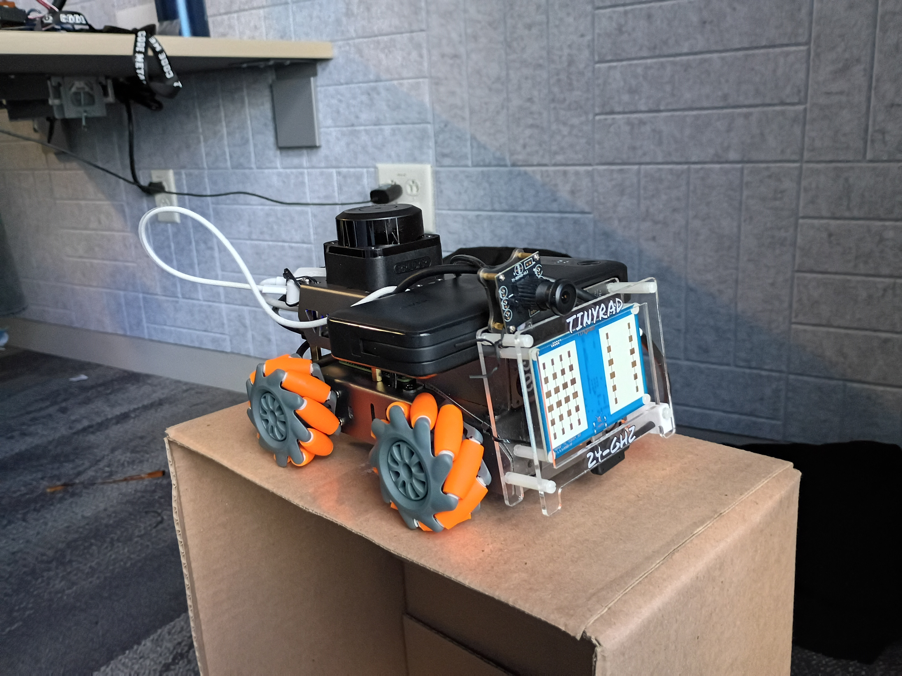
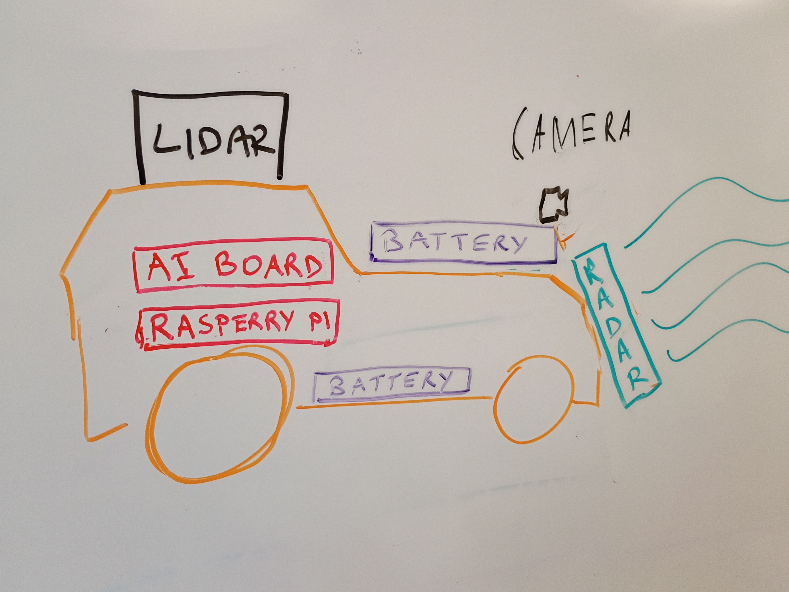
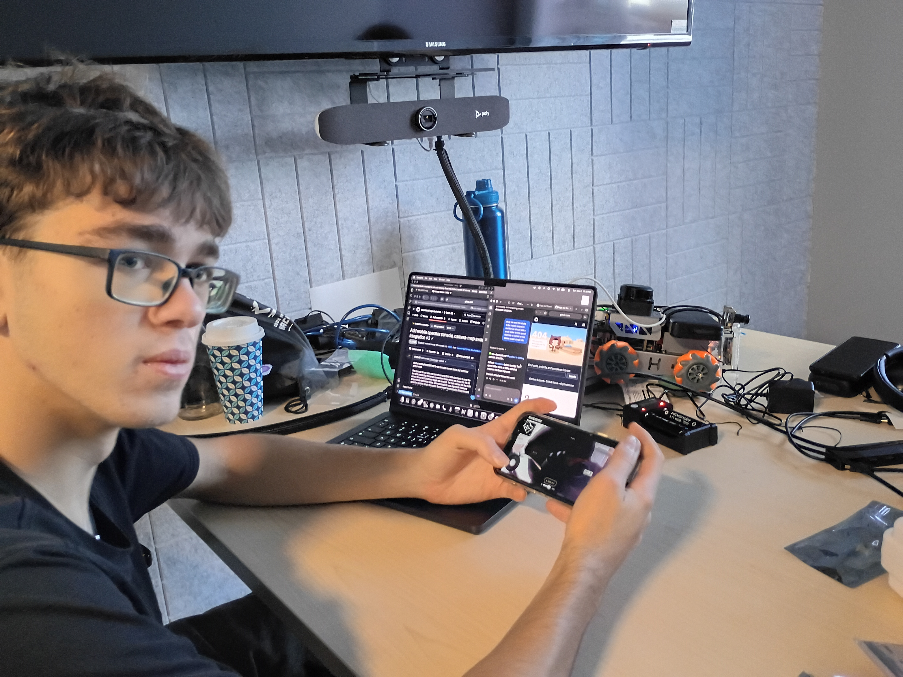
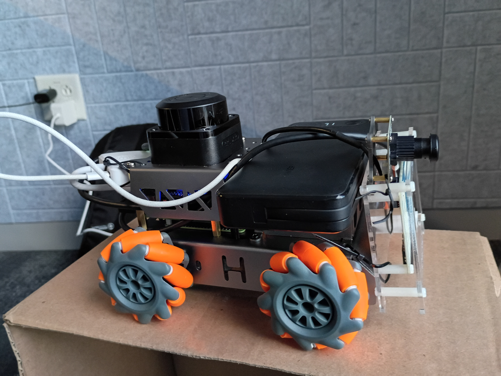

01 · Place
Go where the network is gone
A disadvantaged scene: degraded, inaccessible, or cut off. Minutes matter, and the usual picture is missing.
Forge Hackathon 2026
Send the scout in first. The operator stays on the phone.
Team 28 · Sal, Oleh, Kristjan
Search and rescue · BASE-X, Boston

The mission
Someone is missing. The space is dangerous, closed off, or still changing. Forge asked how responders locate people there. WaveSense is the look that happens before anyone walks in.
A disadvantaged scene: degraded, inaccessible, or cut off. Minutes matter, and the usual picture is missing.
The robot can show a picture, a map, and a range. A person still decides what it means.
A mecanum chassis, driven by hand, carrying a camera, a spinning lidar, and a 24 GHz radar.

The vehicle
Saturday bring-up: duty 35 for 0.3 seconds, on the floor. It rolled forward a little and stopped.
The loop
The motor port stays closed until a stick moves. Release returns to stop. A 300 ms watchdog and a deadman cut the wheels if the link goes quiet. Losing the camera stops them too.
The camera is the main view. Person boxes come from NanoDet on the Pi, a few times a second. They can lag the picture. They expire after 450 ms. Live accuracy was not measured.
The phone shows the live scan and a local map from the C1. Distances are from the scanner, not the bumper. It is one horizontal plane, and the map can drift.
An amber chip reports a candidate and a range. Bio Radar can draw that cue on the camera. With no direction, it draws a band instead of a guessed spot. The cue hides while the robot is driving.

The phone
What we measured
| Check | What happened | How to read it |
|---|---|---|
| On the floor | Duty 35, 0.3 s. Rolled forward a little and stopped. The phone path arms only while a stick is held. | Measured Saturday. Latest full-duty cap was not a timed floor run. |
| All three, still | 45 seconds: camera at least 22.4 fps, C1 at least 9.8 rev/s, radar advanced 11,045 frames, no reconnects. | Measured. Powered hub and a second supply. Wheels were not commanded. |
| Still person | Seated about 1 m in front: candidate 57 of 60 seconds, first at 3 seconds, median range 0.9 m. | One room, one person. Thresholds set on this data. |
| Wooden door | Still person behind the door: 95 of 95 seconds, about 1.5 m. People moving in the background also flagged it. | One run. The radar does not know what moved. |
| Empty | After learning, an empty replay was a candidate for 0 of 31 seconds. A quiet room cleared about 20 seconds after the person left. | Measured on those recordings. A clear result is not an empty building. |
| Direction | Replay of that seated person: a bearing on 57 of 57 candidate seconds, mostly 4° to 9°. None in the empty minute. Through the door it wandered, and the true spot was not logged. | Measured in the radar’s own frame. Left and right against the camera are not checked. |
| Person boxes | An OpenCV test image produced two visible-person detections. The live camera was pointed at the floor. | The pipeline draws boxes. Live accuracy is not measured. |
7–8 November 2026. Radar figures are from one session and from replay. This is not a life-safety test.
In the room
Also built, and not in this demo. Wi-Fi CSI flagged walking across one link at about 2 seconds, 58 of 60 seconds, and the first empty minute was clear. A still person was not separable, and the cue lingered after a walk. Livox 3D software is written; Ethernet had no carrier. Thermal saw a hand on Saturday and is not on the vehicle now.
How it is wired
The demo
Possible person, about N metres. A place to check. Not identified. Left and right are not calibrated. The robot is stopped.
If the radar does not answer USB, show drive, camera, and the map. Say the radar is down. Unplug it for five seconds and replug. That has brought it back. Do not invent a cue.
Thank you
For the floor, the sensors, the mentors, and a search-and-rescue problem that had to work in the room.
Team 28 · Sal, Oleh, Kristjan
